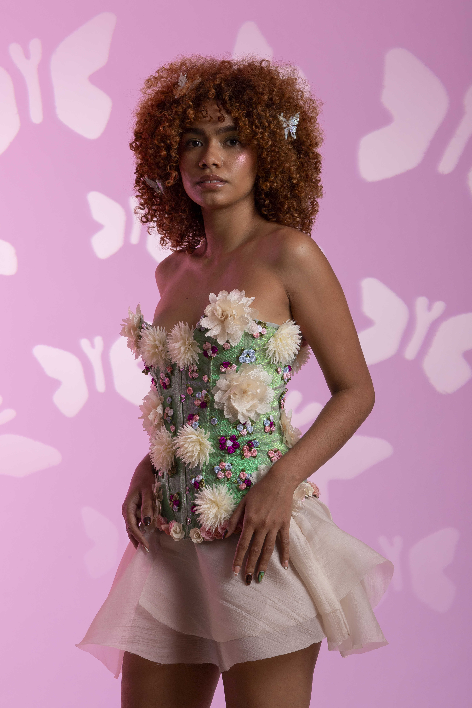
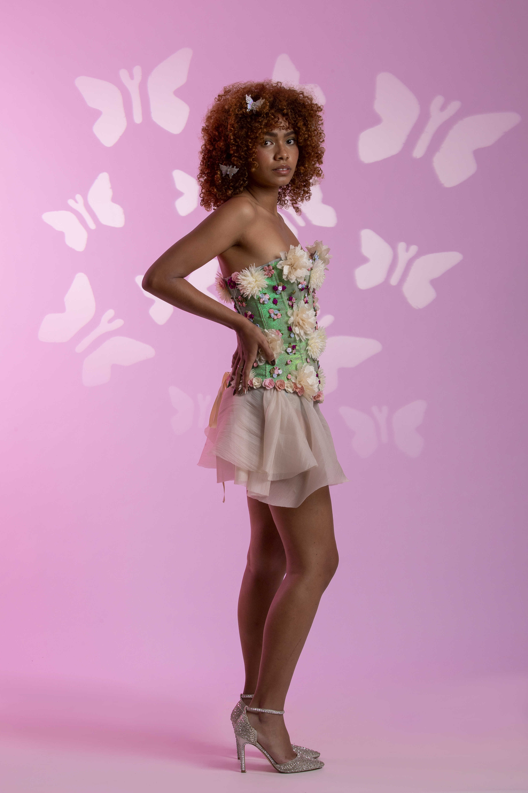
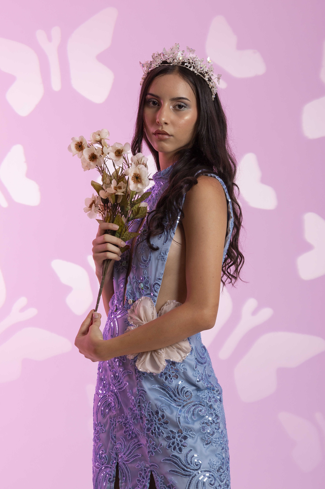
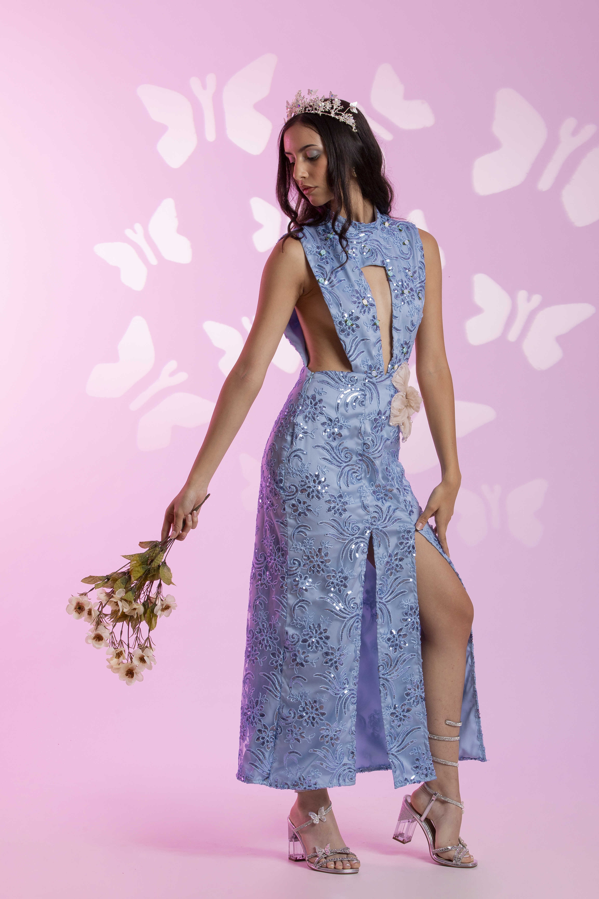
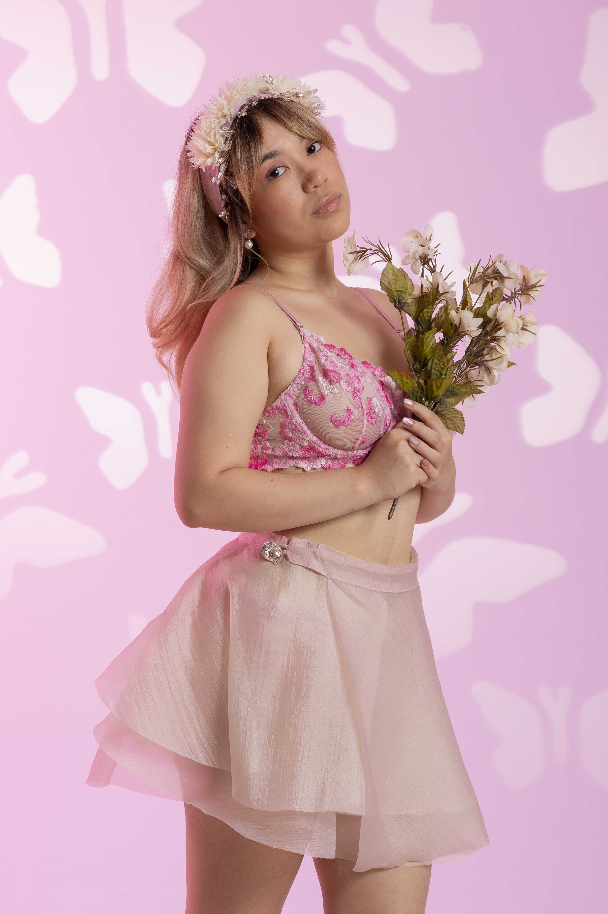
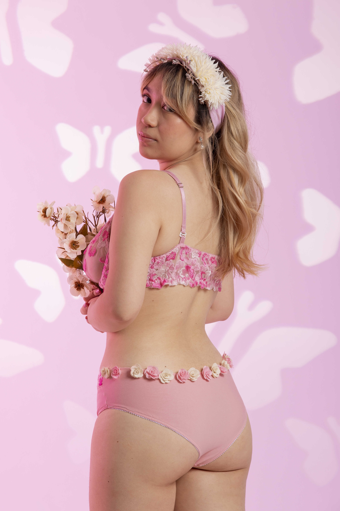

es una colección de Feérica inspirada en el origen poderoso de las hadas y las ninfas como figuras de fuerza, libertad y conexión con la naturaleza. A través de siluetas etéreas, transparencias y estructuras delicadas, la colección explora la sensualidad femenina desde la autonomía y el poder, creando prendas que se sienten ligeras, fluidas y mágicas.





